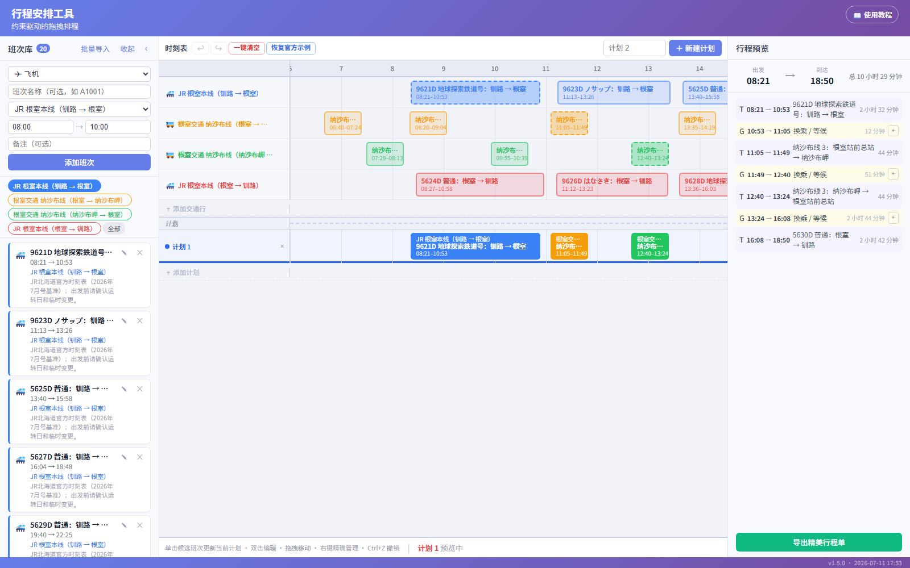
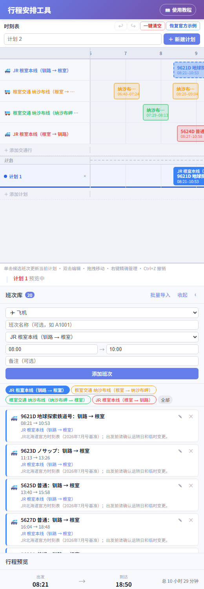
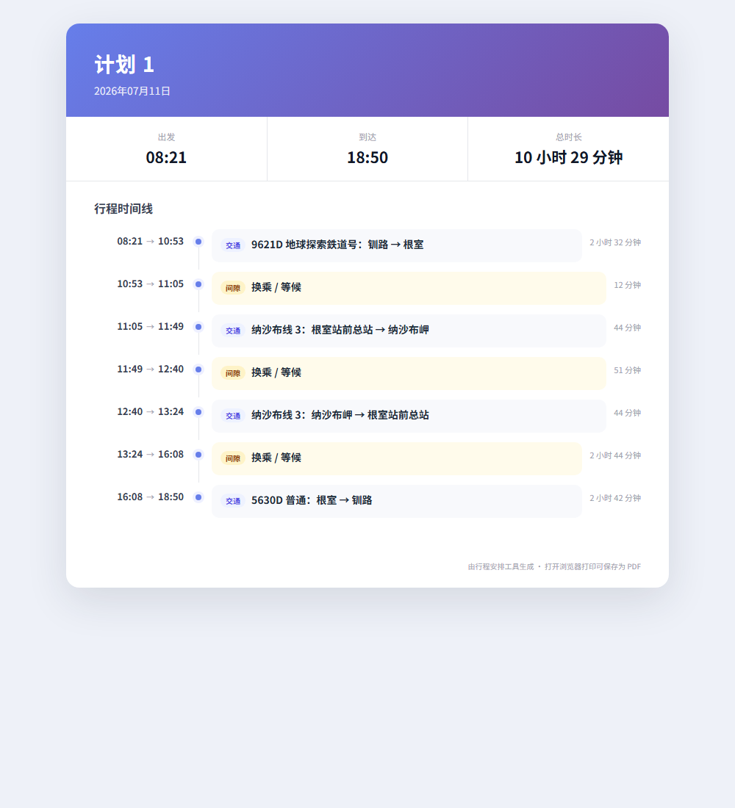

第 1 步：先看一眼整张图
第一次打开已经有 4 条去返交通行 + 20 个候选班次。下方“计划 1”默认选择 08:21 从钏路出发、11:05 前往纳沙布岬、12:40 返回根室并在 16:08 回钏路的完整往返。

第 2 步：认识三个盒子
- 左边班次库：放整张时刻表。
- 中间时刻表：单击候选班次，更新当前计划。
- 右边行程预览：看已选路线，起止时间在同一行。
屏幕空间不够时，点“班次库”标题右侧的 ‹ 可以收起整栏；点留下的窄条即可重新展开。时间轴左右滚动时，交通行和计划行名称会固定在首列。
手机上会改成上下排队，往下滑就行。

第 3 步：一次导入整张时刻表
- 点左上角“批量导入”。
- 选交通类型和交通行。
- 每行粘贴一班。
09:00-11:30 JR 花咲线 11:15-13:45 JR 花咲线 13:25-15:55 JR 花咲线
最后点“导入整张时刻表”。
第 4 步：点一下更新当前计划
- 底部有一条高亮的当前计划。
- 单击候选班次，它会立刻进入当前计划。
- 同一交通行再选新班次时，它会自动换掉旧班次。
- 点另一条计划行可切换当前计划；右键仍可精确加入或移除。
第 5 步：拖动和修改
- 双击班次块：在左边编辑。
- 抓中间：整块移动，不会触发单击选择。
- 抓左右边缘：变更起止时间。
第 6 步：加休息、吃饭或买票
在计划两个班次中间的空白处点鼠标右键。事项不会被允许压住班次或其他事项。
第 7 步：看懂重叠
- 候选班次重叠：可以，自动上下分开。
- 不同交通行的已选班次重叠：变红提醒不可行。
- 事项与班次重叠：拒绝修改。
第 8 步：一键清空和后悔药
点红色“一键清空”，在弹窗中点“确认清空”。班次、交通行和事项会清空，只保留空的“计划 1”。要重新练习，点“恢复官方示例”，再在弹窗中点“确认恢复”。两种操作都可按 Ctrl + Z 撤销。
第 9 步：导出行程单
点右下角“导出精美行程单”。每段交通的出发和到达时间都在同一行。打开 HTML 后按 Ctrl + P 可保存为 PDF。

最后只记住三句
- 左边导入整张时刻表。
- 单击候选班次更新当前计划。
- 点错就按 Ctrl + Z。